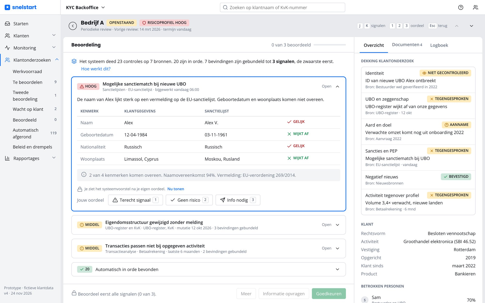
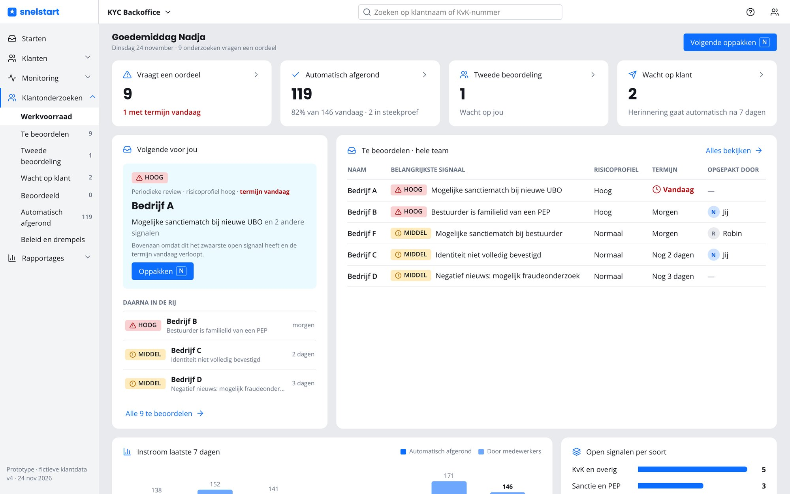
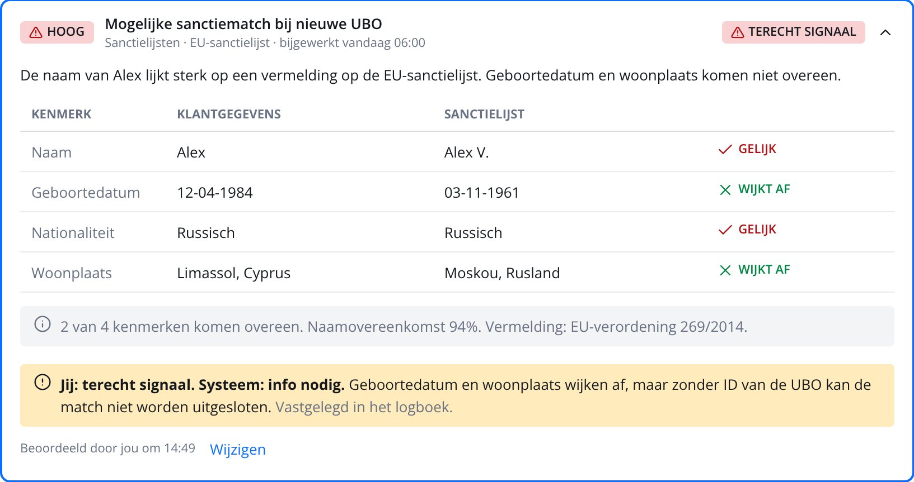
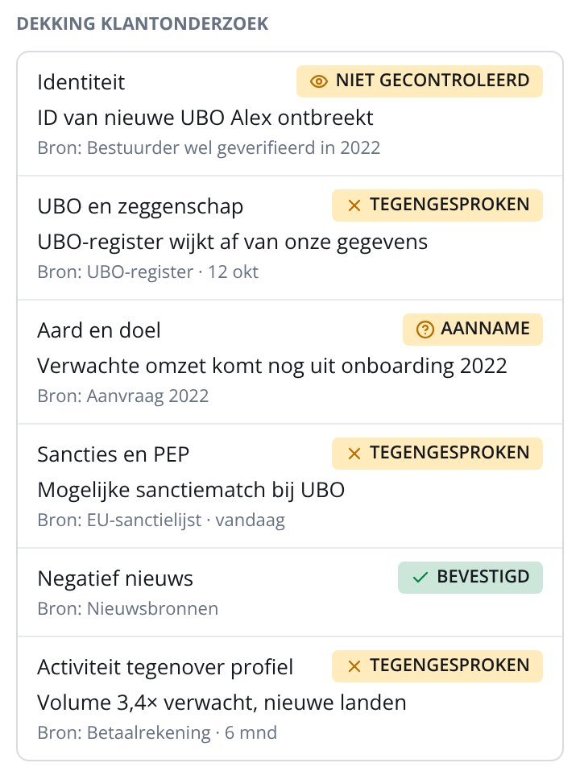
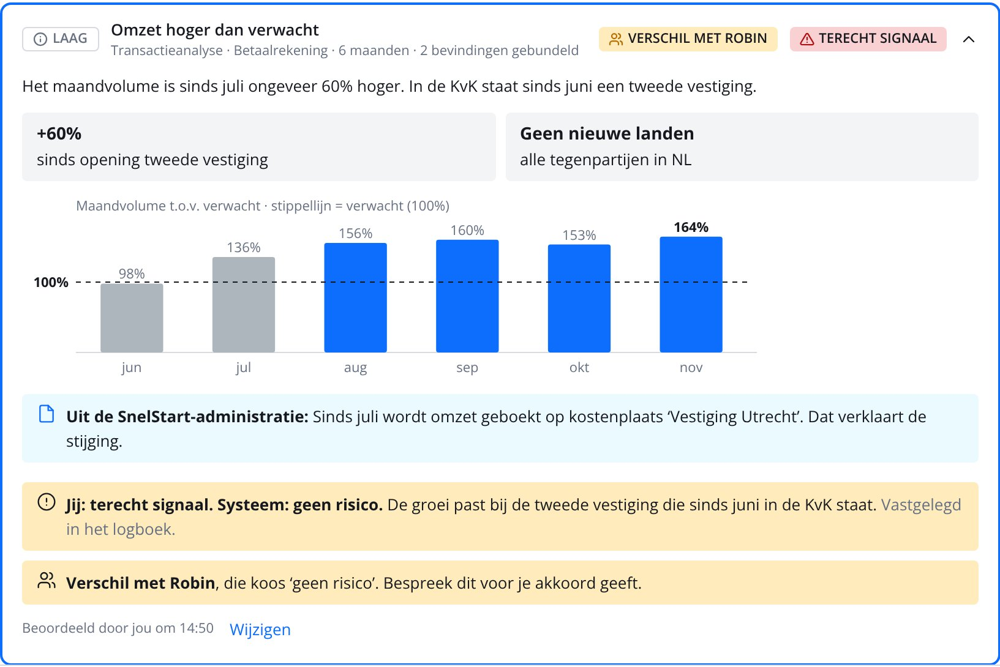
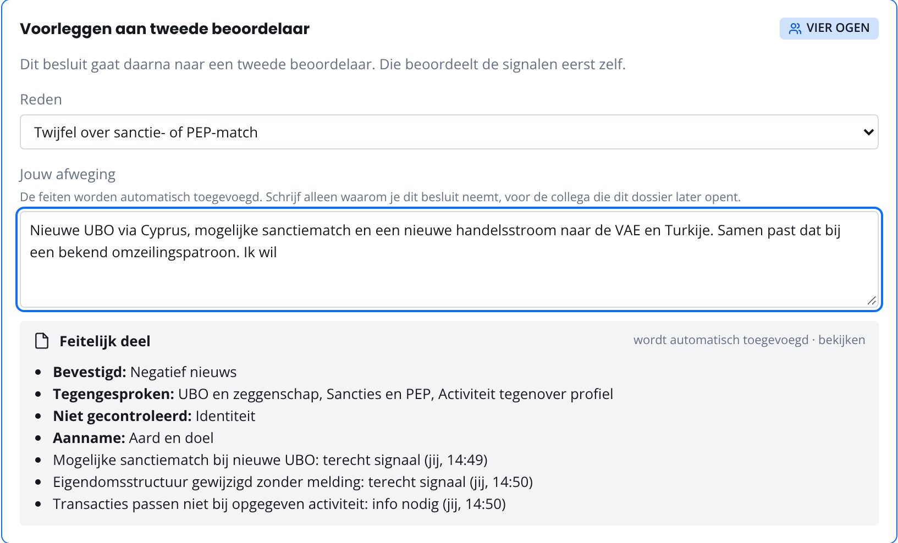

snelstart's compliance team reviews customer due diligence all day: new customers, periodic reviews, and reviews after something changes. The current screen shows every field and explains nothing. The company wants as much automation as possible. I designed a review flow where the system gathers, checks and bundles the evidence, and a person makes every decision that matters. It is also the first page built the new way: I implement the UI layer, and the front-end team wires it to the backend.
Today a reviewer opens a long form with every customer field, a document viewer, technical error codes and three buttons: approve, reject, refuse the customer. Nothing is sorted or bundled. The reviewer works out what is wrong.
The company wants to automate as much as possible. That makes sense: most of the work is gathering and comparing data. But at the moment of decision, research points the other way. A 2024 review of 106 experiments found that on decision tasks, people working with AI did worse on average than the better of the two on its own.
So it can go wrong in two ways. The system takes decisions a person should take. Or the person signs off on whatever the system says. From July 2027, EU anti-money-laundering rules also require meaningful human intervention in automated decisions to take on or refuse a customer, or to change how closely they are checked.


The system fetches data, runs the checks, bundles findings into signals and sorts them by severity. It doesn't propose the final decision, and it shows no risk score as a verdict.
A meta-analysis of automation studies (Onnasch and colleagues, 2014) found a clear line: help with analysing the situation improves performance, but the further automation reaches into choosing the action, the harder people fall when it is wrong. The cost: vendors do offer a final recommendation, and reviewers will ask for one.
For light signals, the system's view is there straight away and taken over in one click. For heavier signals, it appears after the reviewer's own judgement, or when they ask for it, which is logged. If the reviewer disagrees, they see the system's reason and the difference is recorded.
A 2024 study by Agudo and colleagues found that wrong advice did the most damage when people saw it before forming their own view. The cost is time. So the friction is dosed: only where the risk is high, and automation stays fast everywhere else.

Every required part of the customer review gets a status with its source: confirmed, contradicted, not found, not checked or assumed. Approving while something is unchecked gives a warning.
A list makes gaps visible. But a list of ticks can also feel more complete than it is. So "not checked" weighs as heavily as "contradicted", and no tick appears without a source.
The first test round caught the prototype breaking this rule itself. See below.

The second reviewer judges each signal first and only then sees what their colleague decided. Everyone gets personal feedback on their own work: sample checks agreed, second reviews that matched, and how often they departed from the system. There is deliberately no speed and no ranking.
A Human Factors study (Cymek, 2018) found that two people sharing a check found 25% fewer failures than one person alone, unless each expected feedback on their own work. The cost is double work, so it's only used for heavy decisions.

The research came first: an evidence review in October, a scan of the market and the regulation in November. Then one design sprint. I ran the research and the prototyping with AI agents, and made every design call myself.
Every design question answered with the strongest evidence I could find.
New research on markets, studies and rules. The system's view moved behind the reviewer's own, and coverage became visible.
My own verdict: too cluttered. One signal at a time, context to the right, the buttons reviewers already know, built from the existing product components.
The start page became a work queue that says what to pick up next, and why.
I'm implementing the UI layer: the page composed from existing design-system components and tokens, running on mock data. The front-end team then wires it to the backend APIs. It's the first page built the way the tokens case describes.
Before testing with the team, I ran the prototype past a simulated senior reviewer: a persona built on the regulations and the team's knowledge base, working through eight test cases with an answer key. It doesn't replace real reviewers. It is good at one thing: finding where the design breaks a rule.
The parts the research shaped held up: the match table, judging before seeing the system's view, the second review. What failed was everything after the judgement, and the rules and data behind the signals. Research on human judgement got the screen right. It didn't tell me where a case has to go next.
The only way to escalate went to a colleague. A possible sanctions hit has to go straight to compliance, and nothing may happen with the customer until it's resolved.
"Refuse customer, sanctions match confirmed" was a reviewer option. But offboarding means paying out the balance, which a freeze forbids.
Coverage defaulted to "confirmed" when there was no data behind it. A tick without a source, exactly what the design was meant to prevent.
Local politicians were flagged as politically exposed. Under the Dutch list of prominent public functions, they aren't. That means heavier checks for people who don't need them.
Three medium signals together formed a known evasion pattern. And bookkeeping data read as an explanation: invoices confirm the volume, not whether the trade is legitimate.
Approving was possible with open signals. One customer email for onboarding, periodic and event reviews, a tipping-off risk. The risk profile couldn't be changed in the decision. The sample check was a single click.

This is the same question as the Ask-a-designer flow: the system proposes, a person decides, and the design work is making the check fast and stepping in cheap. Here a wrong yes lets in a customer who shouldn't be there, and the law asks for a person who really decides. It's also my second time designing for KYC: at Nect I worked on the verification itself, for the businesses that use it. And it is the first page built the way the tokens case describes: designed and implemented by UX, connected to the backend by front-end.
First the blocking findings get fixed. Then three or four reviewers from the team work through a set of eight cases with known errors, including a true sanctions hit, a wrong system proposal and a source that couldn't be reached. I'll measure whether decisions are right, not whether people like the screen: in one study of AI-assisted decisions, people decided best with the version they liked least.
Research referred to: Onnasch, Wickens, Li & Manzey, Human Factors, 2014 · Vaccaro, Almaatouq & Malone, Nature Human Behaviour, 2024 · Agudo, Liberal, Arrese & Matute, Cognitive Research, 2024 · Cymek, Human Factors, 2018 · Regulation (EU) 2024/1624, art. 76(5) · Dutch list of prominent public functions · DNB on sanctions hits.